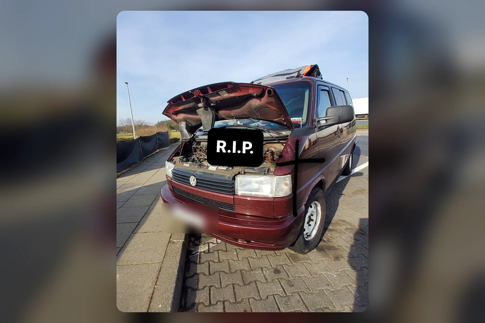

Der Rote ist von uns gegangen — Motorschaden auf der Autobahn

Es gibt Pannen, nach denen man ein Teil austauscht, tief durchatmet und weiterfährt. Und es gibt diesen einen Moment, in dem man spürt: Das hier ist größer. Beim Roten kam dieser Moment auf der Autobahn. Motorschaden. Ende der Fahrt.
Von jetzt auf gleich steht alles still
Auf der Autobahn zählt zuerst nur Sicherheit: raus aus der Gefahrenzone, Warnblinker, Abstand zum Verkehr und Hilfe organisieren. Für große Gefühle ist in diesem Augenblick eigentlich kein Platz. Die kommen später — wenn der Wagen steht, die Motorhaube offen ist und man begreift, dass es nicht mit einer kleinen Reparatur getan sein wird.
Ich schreibe hier bewusst keine erfundene Diagnose und keine angeblichen Warnzeichen auf. Sicher war nur: Der Motor war kaputt und der Rote würde mich nicht mehr weitertragen. Das Foto mit dem großen „R.I.P.“ entstand genau aus diesem Gefühl heraus. Ein bisschen schwarzer Humor hilft manchmal, wenn einem eigentlich zum Heulen ist.
Es war nicht nur ein Auto
Der Rote war Küche, Schlafzimmer, Lagerraum und Rückzugsort. Ich hatte an ihm gebaut, Lösungen erfunden, Fehler gemacht und monatelang darin gelebt. Darum verliert man bei so einem Motorschaden nicht einfach nur ein Fahrzeug. Man verliert die Räume, Routinen und Pläne, die man mit ihm verbunden hat.
Jeder Kratzer hatte eine Geschichte. Die Airlineschienen, das Regal im Heck, die Gasanlage, die Heizung, mein kleiner Ofen — all das war nicht irgendeine Ausstattung. Es war mein selbst zusammengestelltes Zuhause. Genau deshalb tat der Abschied so weh.
Das Ende einer Etappe, nicht meiner Reise
Am Tag des Motorschadens fühlte sich alles endgültig an. Heute sehe ich: Der Rote war eine ganze Etappe meiner Vanlife-Geschichte. Sie endete hart und viel früher, als ich wollte. Aber sie zeigte mir auch, wie viel ich inzwischen konnte und wie sehr dieses Leben zu mir gehörte.
Der Rote ist von uns gegangen. Die Tussy Van ist geblieben. Und irgendwann kam der Blaue — mit neuen Möglichkeiten, neuen Baustellen und, wie ihr noch lesen werdet, seinem ganz eigenen Werkstatt-Drama.
Bis bald und immer gute Fahrt,
eure Tussy 💛